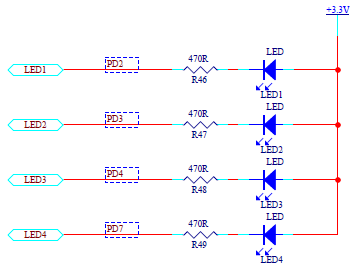

从一个月前开始学习STM32，对于MCU的理解也更加深入透彻。今天开始就陆续将自己在学习中的经历发布到这里（当然，更新随缘）。
目录
流水灯实验原理
LED模块的原理图如图1所示：

图1 LED模块原理图
从原理图中可以很清楚地看出来，只有把左边引脚设成低电平，LED灯就会被点亮，否则，LED灯处于熄灭状态。
因此，STM32的作用就是按一定规律把GPIOD的2、3、4、7引脚拉低拉高。
管脚配置
STM32的管脚和8051MCU相比，功能更加丰富。STM32的管脚可以设置成不同的功能，成为“分时复用”，具体请移步ST提供的DataSheet和参考手册。
同时，不同于51MCU的流水灯程序（以AT89S52为例）：
1
2
3
4
5
6
7
8
9
10
11
12
13
| #include
#include
void delay(unsigned int nCount);
void main(void){
P1 = 0xfe;
while(1){
P1 = _crol_ (P1,1);
delay(5000);
}
}
void delay(unsigned int nCount){
for(; nCount != 0; nCount--);
}
|
将STM32的管脚拉低拉高需要配置STM32管脚的输入输出模式，详见下表：
| 浮空输入 |
GPIO_MODE_IN_FLOATING |
| 带上拉输入 |
GPIO_MODE_IPU |
| 带下拉输入 |
GPIO_MODE_IPD |
| 模拟输入 |
GPIO_MODE_AIN |
| 开漏输出 |
GPIO_MODE_OUT_OD |
| 推挽输出 |
GPIO_MODE_OUT_PP |
| 复用_推挽输出 |
GPIO_MODE_AF_PP |
| 复用_开漏输出 |
GPIO_MODE_AF_OD |
另外，还要提一点，关于STM32的所有外设（包括管脚)的使用流程:
初始化(Initialization)-->配置(Configuation)-->调用(Call)
CODE
下面就贴一下代码。
关于STM32项目的建立，可参考STM32F1开发指南-库函数版本_V3.1
.pdf第三章。
1
2
3
4
5
6
7
8
9
|
#ifndef __LED_H
#define __LED_H
#include "stm32f10x.h"
void LED_Init(void);
#endif
|
1
2
3
4
5
6
7
8
9
10
11
12
13
14
15
16
17
18
19
20
21
22
23
|
#include "led.h"
void LED_Init(void)
{
GPIO_InitTypeDef GPIO_InitStructure;
RCC_APB2PeriphClockCmd(RCC_APB2Periph_GPIOD, ENABLE);
GPIO_InitStructure.GPIO_Pin = GPIO_Pin_2 | GPIO_Pin_3 |
GPIO_Pin_4 | GPIO_Pin_7;
GPIO_InitStructure.GPIO_Mode = GPIO_Mode_Out_PP;
GPIO_InitStructure.GPIO_Speed = GPIO_Speed_50MHz;
GPIO_Init(GPIOD, &GPIO_InitStructure);
}
|
1
2
3
4
5
6
7
8
9
10
11
12
13
14
15
16
17
18
19
20
21
22
23
24
25
26
27
28
29
30
31
32
33
34
35
36
|
#include "led.h"
void delay(uint32_t);
int main(void)
{
LED_Init();
while(1)
{
GPIO_ResetBits(GPIOD, GPIO_Pin_2);
delay(1600000);
GPIO_SetBits(GPIOD, GPIO_Pin_2);
delay(1600000);
GPIO_ResetBits(GPIOD, GPIO_Pin_3);
delay(800000);
GPIO_SetBits(GPIOD, GPIO_Pin_3);
delay(800000);
GPIO_ResetBits(GPIOD, GPIO_Pin_4);
delay(400000);
GPIO_SetBits(GPIOD, GPIO_Pin_4);
delay(400000);
GPIO_ResetBits(GPIOD, GPIO_Pin_7);
delay(200000);
GPIO_SetBits(GPIOD, GPIO_Pin_7);
delay(20000);
}
}
void delay(__IO uint32_t nCount)
{
for(; nCount != 0; nCount--);
}
|
总结
GPIO管脚配置+软件延时实现流水灯是学习STM32过程中最基础外设，也是最重要的资源之一，需要深入的了解。本文趋向实用性，对于GPIO管脚的复用和寄存器配置未进行详细说明，请移步相关文档继续研究。